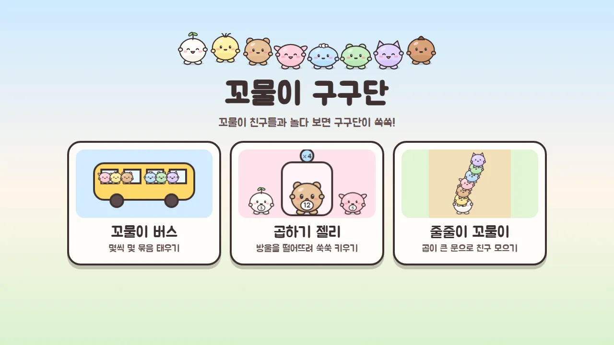
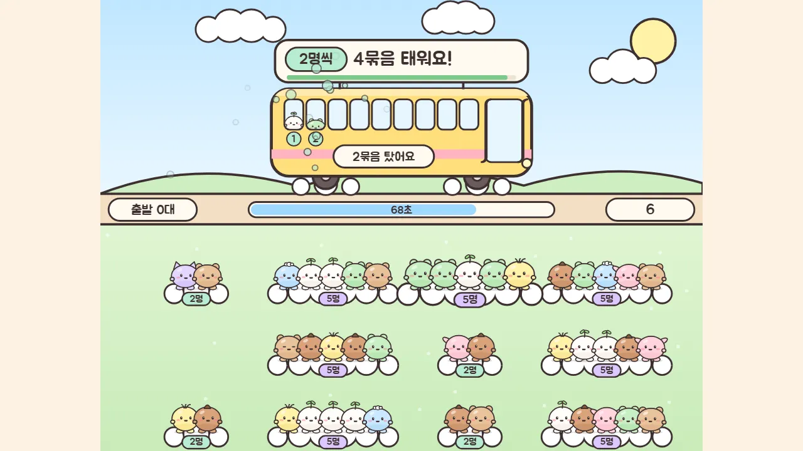
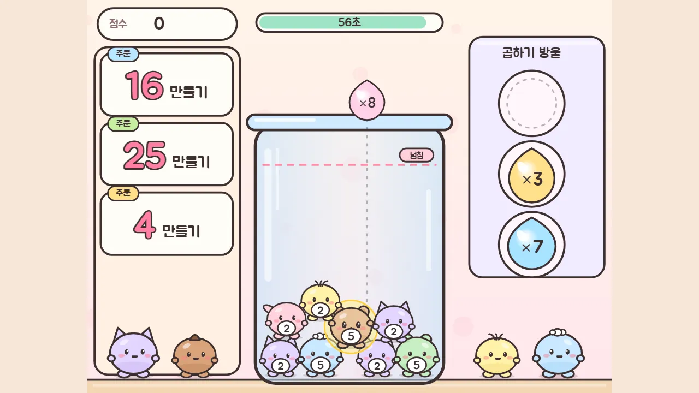
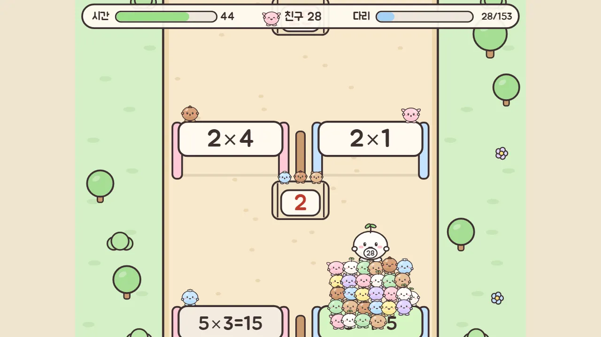

🔤 배움 놀이 · 무료 · 설치 없음
꼬물이 구구단
“꼬물이 친구들과 놀다 보면 구구단이 쏙쏙!”
- 한 판 1~1분 반
- 놀이 세 가지
- 꼬물이 친구 8명
- 소리 있음 · 저장 없음
회원가입 없이 누르면 바로 시작돼요
어떤 게임인가요?
몽실, 콩이, 보리, 토리, 하늘, 쑥이, 나비, 밤톨. 둥글둥글 꼬물이 친구 여덟이 구구단 놀이터에 모였어요. 메뉴에서 놀이를 하나 고르면 한 판이 1분 남짓, 가볍게 시작하고 가볍게 끝나요.
「꼬물이 버스」는 「3명씩 4묶음」 같은 손님을 버스에 태우는 놀이예요. 구름 위에 모여 있는 묶음을 끌어다 버스에 태우고, 다 타면 운전사 꼬물이가 내미는 표에 모두 몇 명인지 숫자판으로 써요. 「곱하기 젤리」는 병 속 친구 몸에 붙은 숫자에 곱하기 방울을 떨어뜨려, 주문 카드의 수로 키우는 놀이예요. 황금 젤리가 나오면 숫자판으로 곱을 써요. 「줄줄이 꼬물이」는 문 앞 우리에 뜬 수와 곱이 같은 문을 골라 지나가면 친구들이 합류하는 놀이이고, 암호 다리가 나오면 숫자판으로 건너가요.
틀린 식은 놀이 중에 다시 나와서 한 번 더 만날 수 있어요. 한 판이 끝나면 「다시 볼 식」으로 헷갈린 식을 모아 보여 줘요. 2·5단, 3·6단, 4·8단, 7·9단, 모두 가운데에서 단을 고를 수 있어요.
이렇게 해요
- STEP 1
놀이와 단을 골라요
메뉴에서 세 가지 놀이 가운데 하나를 눌러요. 놀이 화면에서 「단 고르기」로 2·5단, 3·6단, 4·8단, 7·9단, 모두 중 연습할 단을 정해요.
- STEP 2
끌고, 떨어뜨리고, 달려요
버스는 묶음을 끌어서 태우고, 젤리는 방울을 병 위로 끌어다 떨어뜨리고, 줄줄이는 손가락이나 마우스로 친구를 움직여 우리의 수와 곱이 같은 문을 골라요.
- STEP 3
숫자판에 곱을 써요
버스의 표, 젤리의 황금 젤리, 줄줄이의 암호 다리에서는 숫자판이 열려요. 화면을 누르거나 키보드 숫자 키로 써요.



🌟 이런 것도 있어요
- 다시 볼 식: 틀린 식은 놀이 중에 다시 나오고, 끝난 화면에 「다시 볼 식」으로 모아 보여 줘요
- 단 고르기: 2·5단, 3·6단, 4·8단, 7·9단, 모두 중에서 골라요
- 키보드 숫자 키: 숫자판이 열렸을 때 윗줄 숫자와 숫자 패드, 지우기는 Backspace로 쓸 수 있어요
- 꼬물이 친구 여덟: 놀이마다 표정이 달라지는 친구들이 나와요
기록은 저장하지 않아요. 열 때마다 새로 시작해요.
이런 분께 추천해요
- 구구단을 처음 익히는 어린이
- 귀여운 친구들과 가볍게 곱셈을 연습하고 싶은 분
- 한 판씩 짧게 여러 놀이를 바꿔 가며 하고 싶은 분
처음에는 2·5단이나 3·6단처럼 두 단씩 골라 시작해 보세요. 다시 볼 식에 나온 식을 한 번 더 말해 보면 쏙 기억에 남아요.
📱 어떤 기기에서 하면 좋을까요?
- 가장 좋아요태블릿(가로) 가로 화면
손가락으로 끌고 누르기에 가장 편하고 친구들이 크게 보여요.
- 가장 좋아요전자칠판·컴퓨터 큰 화면 · 마우스·키보드
마우스로 끌고 누르거나, 숫자판에는 키보드 숫자 키를 써도 돼요.
- 괜찮아요휴대폰 세로 화면은 작아요
가로 화면 게임이라 세로로 들면 작게 보여요. 가로로 눕혀서 해 주세요.
오른쪽 위 메뉴(⋮ 또는 ···)에서 「다른 브라우저로 열기」를 눌러 크롬이나 사파리로 열어 주세요. 앱 안에서는 전체 화면이 안 되고 저장이 풀릴 수 있어요.
🍎 아이폰·아이패드에서는
- ① 사파리로 열기
카카오톡이나 네이버 앱 안에서는 화면이 좁을 수 있어요. 사파리로 열고 가로로 눕혀 주세요.
- ② 전체 화면
이 놀이에는 전체 화면 단추나 홈 화면 추가 설정이 따로 없어요. 브라우저 화면 그대로 놀아요.
- ③ 소리
무음 스위치가 켜져 있으면 소리가 나지 않을 수 있어요.
🤖 갤럭시 등 안드로이드에서는
크롬이나 삼성 인터넷으로 열고 가로로 눕혀 주세요. 이 놀이에는 전체 화면 단추가 따로 없어요.
▶ 바로 해 보기
설치도, 회원가입도 필요 없어요.
꼬물이 구구단 시작하기game.edoori.co.kr/kkomul/